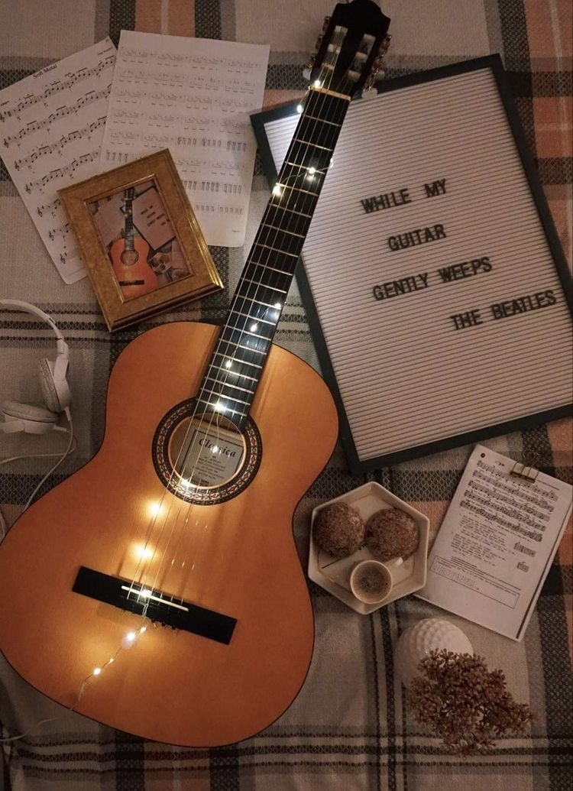
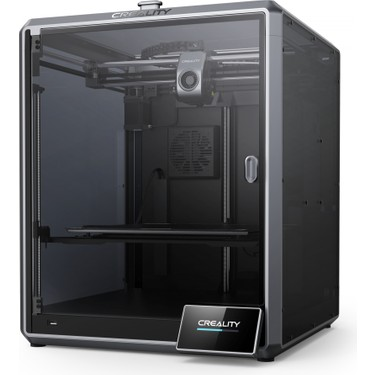

Hobi siteme hoş geldiniz...
-

Günümün boş olduğu vakitlerde gitar çalmayı tercih ederim üzerinde yaptığım pratikler sonucu bir çok günümüz şarkısını çalabiliyor ve aynı zamanda söyleyebiliyorum.
-
Sabah kalkıp gerekli işlerimi halletikten sonra güzel bir kahvaltı yapıp daha sonra spor salonuna giderim haftada şu anda 6 gün gidiyorum
-

Oyunlar, zihinsel ve fiziksel becerilerin gelişimine katkıda bulunabilir. Ayrıca oyunlar, stres atmak ve zihni dinlendirmek için de harika bir yoldur. Oyun oynamak, yaş fark etmeksizin herkes için eğlenceli ve keyifli bir etkinliktir. Aynı zamanda rekabetçi ruhu canlı tutar ve strateji geliştirmeye yardımcı olabilir. Oyun oynamak, aynı zamanda arkadaşlarla ve aile üyeleriyle kaliteli zaman geçirmek için de harika bir seçenektir.
-

Hobilerimin arasında 3D printer ile bir şeyler üretmekte yer alıyor. sıfırdan bir şeyleri inşa edip somut bir şey elde etmek keyif veriyor daha sonra bu elde ettiğim parçaları güzelce boyayıp emek sarf edip yakın çevreme hediye ediyorum ya da satış yapıyorum eğer ilgileniyorsanız buraya tıklayarak benimle iletişime geçin